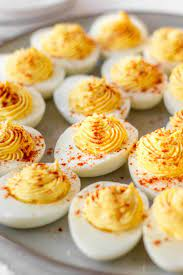

Deviled Eggs

Description
Deviled eggs (also known as stuffed eggs, Russian eggs, curried eggs or dressed eggs) are hard-boiled eggs that have
been shelled, cut in half, and filled with a paste made from the egg yolks mixed with other ingredients such as
mayonnaise and mustard.
They are generally served cold as a side dish, appetizer or a main course during gatherings or parties. The dish's
origin can be seen in recipes for boiled, seasoned eggs as far back as ancient Rome, where they were traditionally
served as a first course. The dish is popular in Europe, North America and Australia.
Ingredients
- 6 hard-cooked eggs
- 2 tablespoons mayonnaise
- 1 teaspoon white sugar, or to taste
- 1 teaspoon white vinegar
- 1 teaspoon prepared mustard
- 1 tablespoon finely chopped onion
- 1 tablespoon finely chopped celery
- ½ teaspoon salt, or to taste
- 1 pinch paprika, or to taste
Steps
- Gather all ingredients. Peel hard-cooked eggs.
- Slice eggs in half lengthwise and remove yolks; set whites aside.
- Mash yolks with a fork in a small bowl. Stir in mayonnaise, sugar, vinegar, mustard, onion, and celery; mix well and
season with salt to taste.
- Stuff or pipe egg yolk mixture into egg whites.
- Sprinkle with paprika. Refrigerate until serving.